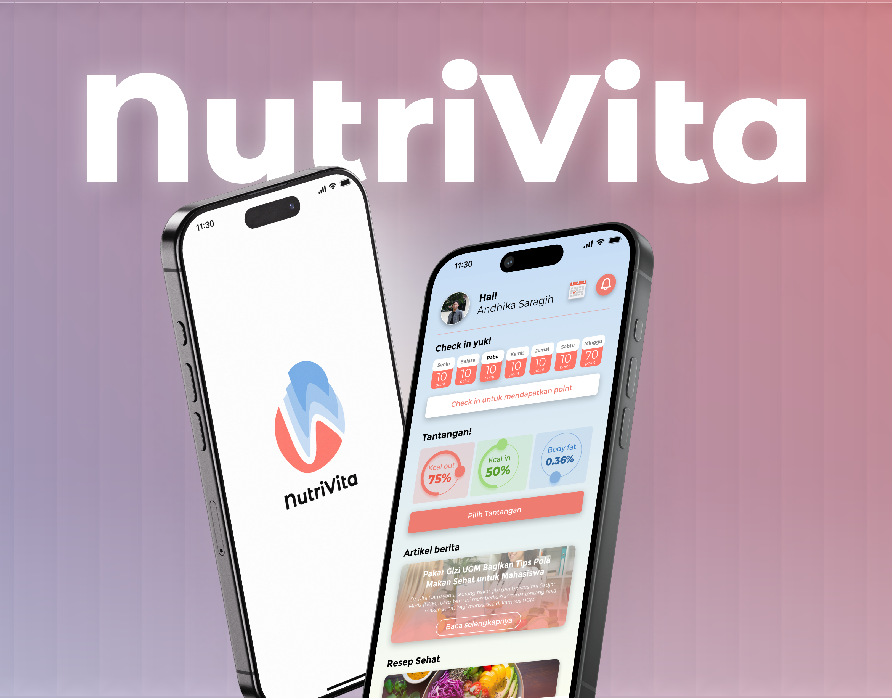

Halo, saya Andhika — seorang UI/UX & Graphic Designer.
Saya percaya desain yang baik itu tidak sekadar cantik dipandang, tapi juga mudah dipahami dan enak digunakan. Sejak beberapa tahun terakhir, saya membantu brand dan produk digital menyampaikan cerita mereka lewat visual yang rapi, sistematis, dan punya karakter.
Dari riset pengguna sampai eksekusi visual akhir, saya suka terlibat di setiap tahap, karena di situlah detail-detail kecil yang membuat perbedaan besar biasanya ditemukan.
Desain yang bercerita, bukan sekadar terlihat bagus.
Kumpulan karya visual dari branding, konten sosial media, hingga materi promosi, dirancang agar setiap brand punya suara yang konsisten dan mudah dikenali.

Backspace Studio
Brand identity & social kit

Shoot. Edit. Deliver.
Content & video production

You Didn't Just Join
Campaign & poster design

D4Media
Recruitment & print design
Pengalaman digital yang intuitif, dari riset sampai rilis.
Studi kasus produk digital yang saya rancang dengan pendekatan berbasis riset — mulai dari wireframe, prototyping, hingga sistem desain yang siap dikembangkan tim.
Cookaloud
Cook Aloud is a mobile cooking assistant app that provides hands-on, step-by-step guidance. With voice integration similar to Google Assistant, users can ask, “What’s the next step?” or “Repeat that step” without frequently checking their screen. The app delivers a more practical and convenient cooking experience, helping users stay focused on cooking with accessible, interactive support.

NutriVita
NutriVita is a revolutionary nutrition companion designed to help you achieve an optimal healthy lifestyle. By combining trusted nutritional data and personalized calorie tracking with gamified challenges, NutriVita makes healthy living not just achievable, but engaging and sustainable for the long term.

Mona Coffee
Mona Coffee is a coffee and tea ordering app that provides customers with the convenience of enjoying their favorite beverages through three service options: dine-in, takeaway, and delivery. With an intuitive interface, users can easily browse the menu, make payments, and track their orders in real-time, ensuring a seamless and hassle-free experience.
Punya proyek menarik?
Yuk,
ngobrol dulu.
Saat ini saya membuka slot terbatas untuk proyek freelance maupun kolaborasi jangka panjang. Ceritakan kebutuhan kamu, saya akan balas dalam 1–2 hari kerja.
say hello →